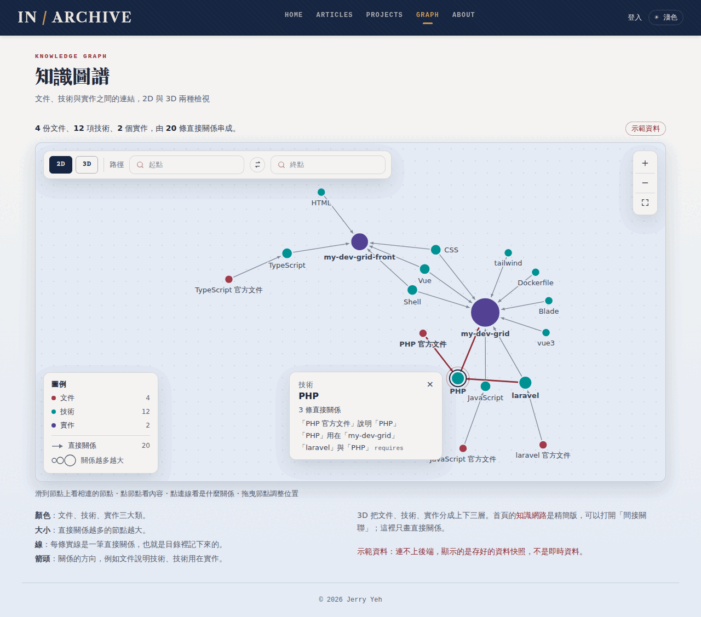
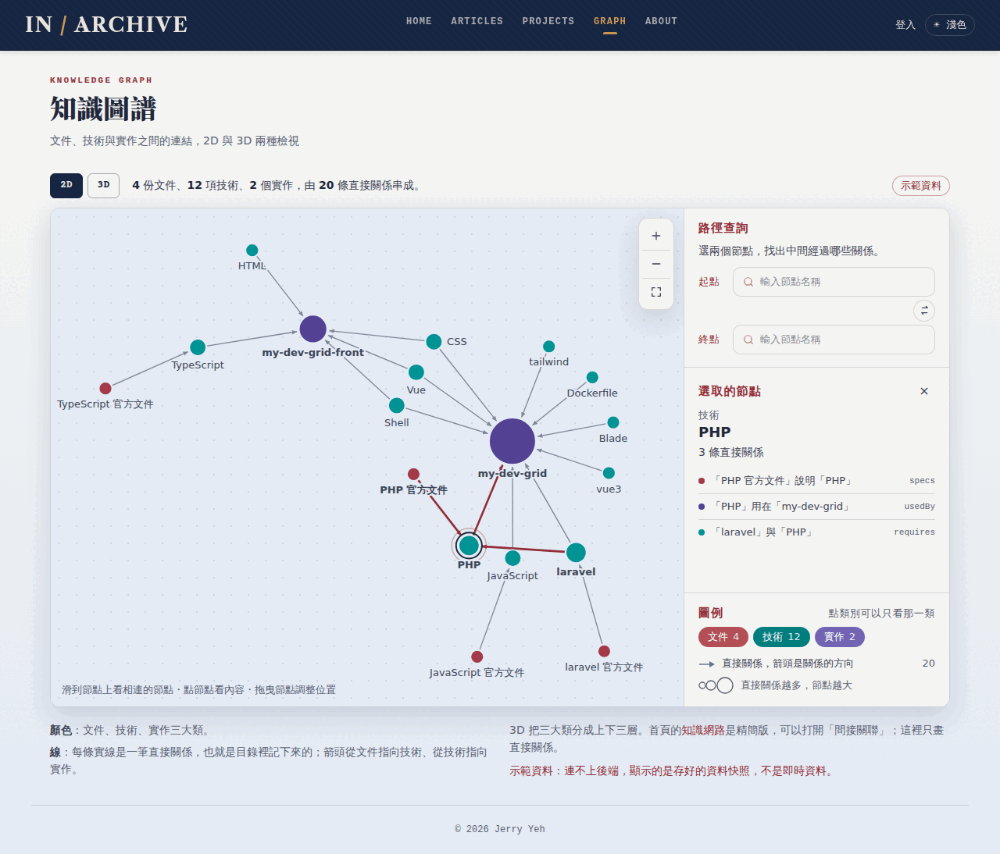
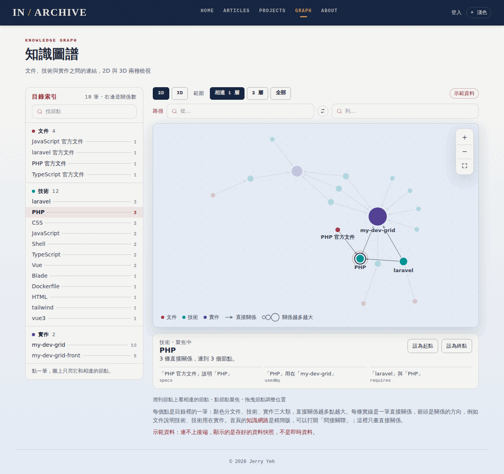

畫稿只看頁面結構、圖例、說明、控制項與配色；圖是用示範資料快照畫的靜態 SVG，不是力模擬。現況截圖在 audit/。

畫布放大到 1200px 寬，2D/3D、路徑查詢、縮放、圖例都浮在圖上。點節點跳出首頁同款的卡片，路徑結果直排在右下角。

圖在左、側欄在右：路徑查詢、選取的節點、圖例三段。文字都在側欄，圖上只留縮放。手機上三段變成圖下面的三張卡。

左邊是全部 18 筆的索引（依三大類分組，右邊是關係數），點一筆就把圖聚焦在它和相連的節點。索引同時是圖的文字版。